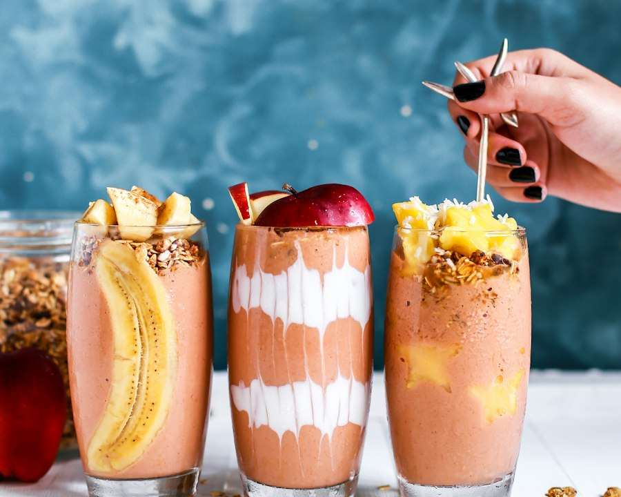

{Breakfast · Smoothie}
Sunrise Fruit Smoothie Trio
Three creamy breakfast smoothies layered with yogurt, granola, and fresh fruit. Blend once, then finish each glass with a different topping for a colorful, nourishing start to the day.
Start CookingIngredients
- Frozen banana 2
- Frozen mango 1 cup
- Greek yogurt 1 cup
- Unsweetened almond milk 1½ cups
- Peanut butter 2 tbsp
- Cinnamon ½ tsp
- Granola ¾ cup
- Banana, apple, pineapple to garnish
Steps
- Blend banana, mango, yogurt, almond milk, peanut butter, and cinnamon until thick and creamy.
- Pour into three tall glasses. For the middle glass, swirl extra yogurt along the inside before filling.
- Top one with banana slices and granola, one with apple, and one with pineapple and coconut.
- Serve immediately with a spoon so the granola stays crunchy.